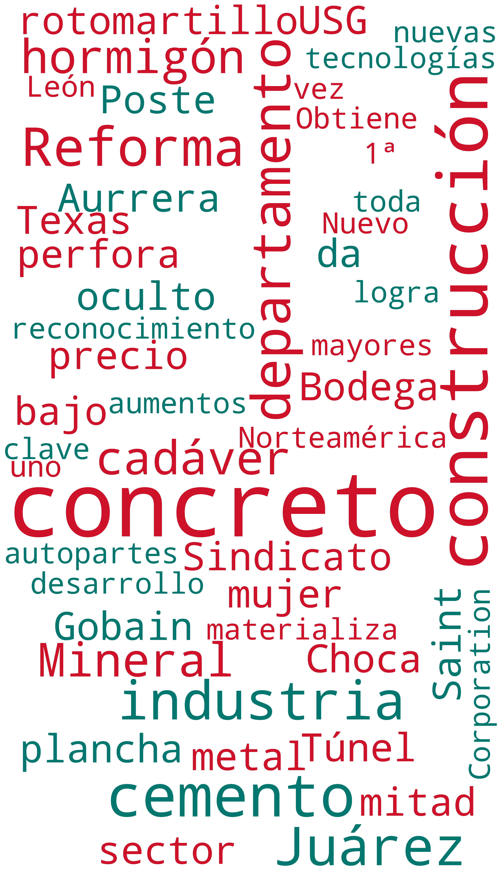
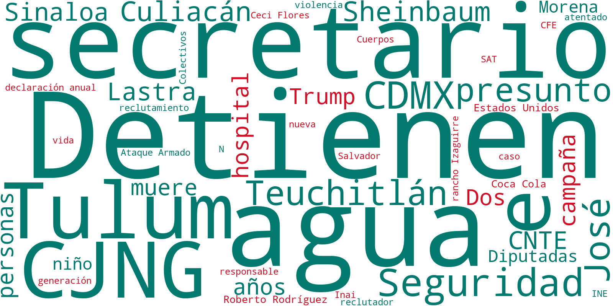
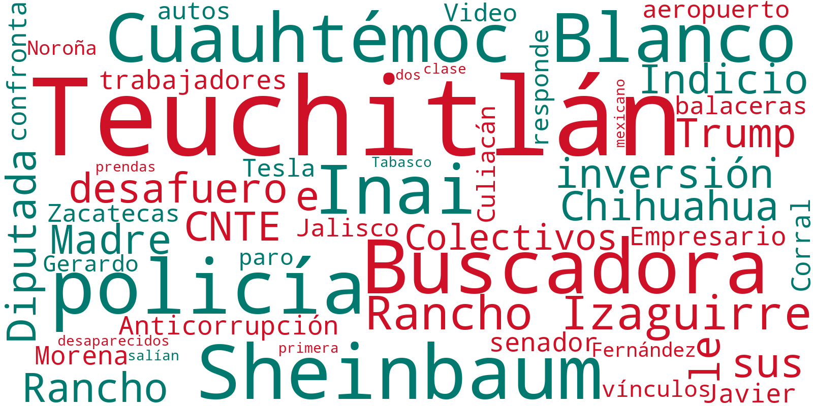
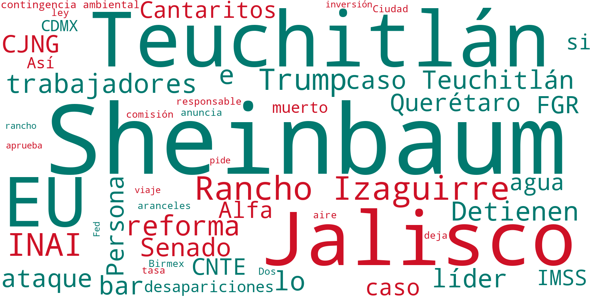
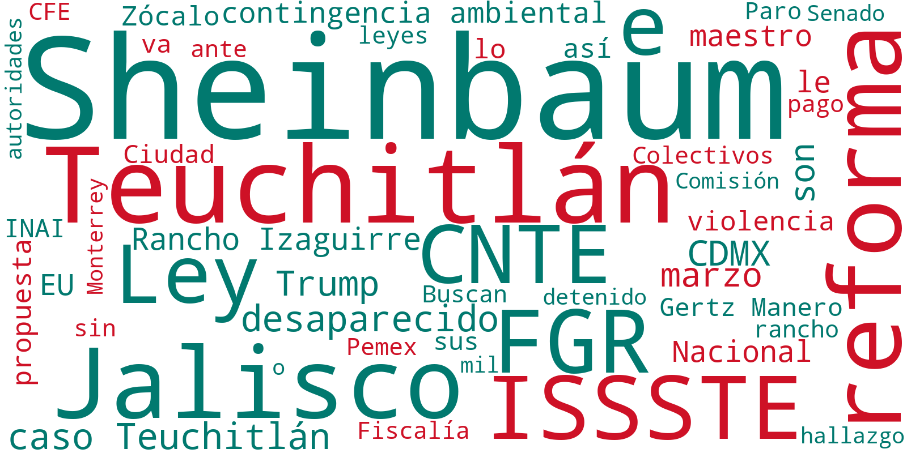

Este tablero refleja un monitoreo de la presencia en medios de comunicación digitales de la empresa USG, así como de términos relacionados con la misma (tablaroca, cemento, industria de la construcción, entre otros).


| Fecha | Resumen | Nube de Palabras |
|---|---|---|
| 25/02 - 25/03 | En el último mes, la industria de la construcción ha experimentado varios desarrollos significativos en diferentes regiones. USG Corporation ha sido reconocida por primera vez en toda Norteamérica. A la vez, ha destacado la importancia de Nuevo León en el desarrollo de nuevas tecnologías en el sector.
Esta región se posiciona como un centro clave para la innovación en construcción, lo que podría generar nuevas oportunidades para las empresas que operan en el área. Al mismo tiempo, Cemex ha avanzado en sus esfuerzos por la sostenibilidad al introducir concreto de baja huella de carbono en Dubái, marcando un paso importante hacia la reducción del impacto ambiental de la construcción. En el ámbito laboral, el sindicato de Saint-Gobain ha logrado un aumento significativo en el sector de autopartes, cumpliendo con las aspiraciones de la reforma laboral y estableciendo un precedente para futuras negociaciones sindicales en la industria. En términos de seguridad y cumplimiento, se han reportado incidentes que resaltan la necesidad de una gestión más rigurosa en los sitios de construcción. En Ciudad Juárez, un túnel transfronterizo fue sellado con cemento, subrayando la importancia de la seguridad fronteriza y el uso del concreto en operaciones de infraestructura crítica. Sin embargo, en la misma ciudad, un derrame de cemento durante la construcción de la Torre Centinela ha causado daños a vehículos, lo que enfatiza la necesidad de estrictos controles de calidad y seguridad en los proyectos. Además, en Hidalgo, se han encontrado cadáveres ocultos bajo planchas de cemento en departamentos, lo que ha generado preocupaciones sobre la supervisión y el control en las obras de construcción. Por otro lado, la industria enfrenta ciertos desafíos económicos y de mercado. La caída del 4.2% en la industria de la construcción en enero, acumulando siete meses consecutivos de descensos, pone de relieve la urgencia de reactivar el sector. La industria ha solicitado a las autoridades, como Claudia Sheinbaum, certidumbre y seguridad para fomentar la inversión y el crecimiento. En este contexto, iniciativas como ""Inspira Mujer Construrama 2025"" buscan promover el liderazgo femenino en la industria, lo que podría aportar nuevas perspectivas y soluciones a los desafíos actuales. Por ejemplo, en el Caribe, la isla de Trinidad está experimentando un cambio al abandonar el uso del concreto en la construcción de viviendas, lo que podría influir en las tendencias futuras de materiales de construcción sostenibles, aunque abre un posible frente para la industria tradicional de la construcción al etiquetar negativamente al uso del concreto. Estos desarrollos reflejan un panorama complejo para la industria, donde la innovación y la adaptación son esenciales para superar las dificultades actuales. |
 |
| Fecha | Resumen | Nube de Palabras |
|---|---|---|
| 22/03/2025 | En un trágico suceso que conmociona a la comunidad, Toñito, un niño de 9 años, fue encontrado sin vida dentro de un tinaco en el Estado de México, tras haber salido a jugar. La policía local detuvo al presunto responsable, mientras que las autoridades continúan investigando los detalles del caso para determinar las circunstancias exactas de su muerte y asegurar justicia para la víctima y su familia. En un contexto de creciente inseguridad, el secretario de Seguridad de Tulum, José Roberto Rodríguez, fue asesinado en un ataque armado. Este incidente, que también dejó herido a su escolta, resalta las preocupaciones sobre la violencia en la región y la necesidad de reforzar las medidas de seguridad. Simultáneamente, México enfrenta una grave sequía que afecta a al menos 13 estados, destacando la importancia del agua como eje fundamental de la soberanía nacional. La situación ha llevado a las autoridades a exhortar a la población a cuidar este recurso cada vez más escaso. En otro ámbito, el gobierno de Puebla, liderado por el gobernador Armenta, ha implementado un programa de alimentación sana para niños, buscando mejorar la calidad de vida de los menores en la región. Este esfuerzo se enmarca en iniciativas más amplias para abordar problemas de salud pública y garantizar el bienestar de las futuras generaciones.Finalmente, la detención de José "N", conocido como "El Lastra", presunto reclutador del Cártel Jalisco Nueva Generación (CJNG), en la Ciudad de México, marca un golpe significativo contra el crimen organizado. Las autoridades continúan investigando su vínculo con campos de adiestramiento del CJNG, subrayando la complejidad de la lucha contra el narcotráfico en el país. En un contexto internacional, la política migratoria de Estados Unidos bajo la administración de Trump se ha endurecido, afectando no solo a migrantes, sino también a turistas legales. |  |
| 21/03/2025 | En el ámbito político, la titular de la Secretaría de Anticorrupción, Raquel Buenrostro, ha prometido indemnizar a los trabajadores del Instituto Nacional de Transparencia, Acceso a la Información y Protección de Datos Personales (INAI) tras su extinción y recontrataciones. La medida busca atender las inquietudes laborales derivadas de la disolución del instituto, en un contexto donde la transparencia y la rendición de cuentas son temas candentes en México. Por otra parte, el desafuero del diputado Cuauhtémoc Blanco ha generado un intenso debate en el Congreso. Diputadas de Morena y de la oposición han instado a votar para evitar que se deseche el proceso, reflejando las divisiones políticas y la complejidad de los procedimientos legislativos en México. La controversia subraya la tensión en torno a la protección de figuras políticas en el país. En el ámbito social, el rancho Izaguirre en Teuchitlán, Jalisco, ha sido foco de atención debido a las investigaciones sobre desapariciones. La Comisión Nacional de los Derechos Humanos ha solicitado a la Fiscalía de Jalisco preservar los indicios encontrados. Esta situación está siendo observada por colectivos de buscadoras, quienes critican la falta de garantías en la protección de derechos humanos y la gestión de las investigaciones en el lugar. |  |
| 20/03/2025 | El tema central del día es la controversia en torno al caso del Rancho Izaguirre en Teuchitlán, Jalisco. La Fiscalía General de la República ha abierto el sitio a la prensa y a madres buscadoras, lo que ha revelado reclutamientos forzados por parte del CJNG y hallazgos de restos humanos. La situación ha provocado protestas y exigencias de justicia de los colectivos de búsqueda, quienes consideran que las autoridades han sido indiferentes. La postura de Claudia Sheinbaum, quien insiste en que no será su talón de Aquiles, ha generado críticas y comparaciones con casos anteriores de desapariciones en México. Otro tema relevante es la aprobación de reformas legales por parte de la 4T que llevan a la desaparición del INAI, lo que ha generado reacciones mixtas. Mientras algunos trabajadores serán liquidados, otros podrían ser reubicados en nuevos órganos de transparencia. Este cambio ha suscitado preocupaciones sobre el futuro de la transparencia y la rendición de cuentas en el país. Por último, destaca la situación económica en México y Estados Unidos. La Reserva Federal ha pronosticado un menor crecimiento para Estados Unidos debido a medidas del expresidente Trump, lo que podría impactar a México. En paralelo, se anuncian inversiones millonarias en Durango para proyectos de fertilizantes y tecnología, mientras el peso mexicano sufre una caída frente al dólar, reflejando la incertidumbre económica. |  |
| 19/03/2025 | La detención de Ekrem Imamoglu, alcalde opositor de Estambul, marca un punto crítico en la política turca. Imamoglu, conocido por ser una figura destacada de la oposición, fue arrestado en un contexto de crecientes tensiones políticas en Turquía. Su detención se produce en medio de acusaciones de corrupción y abuso de poder, lo que genera preocupación sobre el estado de la democracia en el país y el uso del sistema judicial para silenciar voces disidentes. En México, el caso Teuchitlán sigue generando controversias. La Fiscalía General de la República (FGR) ha señalado irregularidades en la investigación llevada a cabo por las autoridades locales de Jalisco, tras el hallazgo de restos humanos en el rancho Izaguirre. Este caso ha desencadenado una serie de críticas hacia las autoridades estatales y municipales por su manejo del caso y la presunta colusión con el crimen organizado, lo que ha llevado a la propuesta de crear una comisión de la verdad. Por otro lado, la Coordinadora Nacional de Trabajadores de la Educación (CNTE) mantiene su paro nacional, protestando contra la reforma a la Ley del ISSSTE. A pesar de que el gobierno de Claudia Sheinbaum retiró la iniciativa, los maestros continúan exigiendo soluciones a sus demandas laborales. Este movimiento ha provocado bloqueos y manifestaciones en la Ciudad de México, afectando la movilidad y generando un ambiente de tensión social. |  |